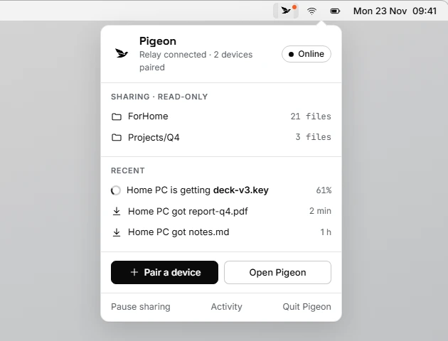
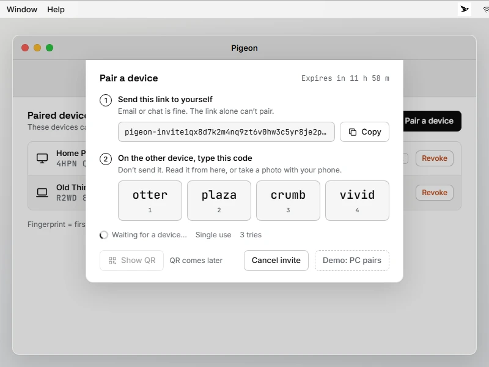
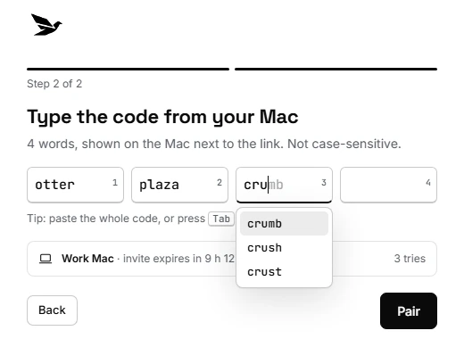
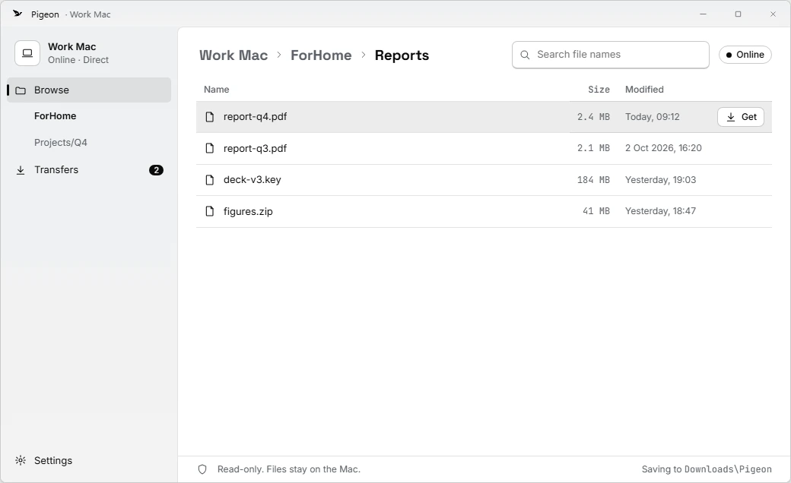
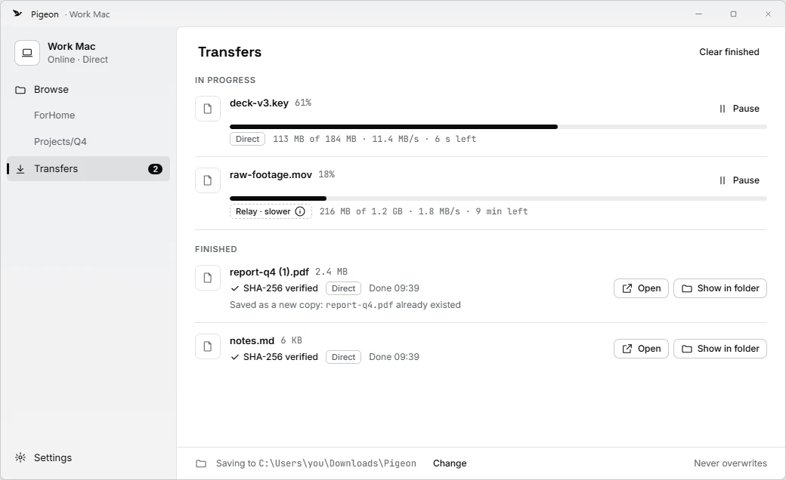

Fayllaringiz uyga yo‘lni o‘zi topadi.
Ish kompyuteringizdagi fayllarni uydan turib oling. VPN’siz, port ochmasdan va bulutga yuklamasdan.
Qanday ishlaydi
-
Ish kompyuterida papkani tanlang
Ish kompyuteringizga kichik dastur o‘rnatiladi. U faqat siz tanlagan papkalarni ochadi va ulardagi fayllarni o‘zgartirmaydi.
-
Uydan so‘rang
Uydagi ilovada o‘sha papkalar ko‘rinadi. Kerakli faylni tanlaysiz.
-
Fayl to‘g‘ri sizga uchib keladi
Ikki kompyuter to‘g‘ridan-to‘g‘ri, shifrlangan holda bog‘lanadi. Ishxona tarmog‘i yo‘l bermasa, fayl oraliq server orqali keladi, lekin server uning ichini ko‘ra olmaydi.
Ilova qanday ko‘rinadi
Bu dizayn namunasi — ilova tez orada chiqadi
Istalgan kompyuteringiz papkalarini ochib berishi ham, fayl olishi ham mumkin. Hozir Mac va Windows’da, Linux’da ham tez orada. Rasmlarda Mac papkani ochib bergan, Windows kompyuter esa fayl olyapti.
-
Papkani tanlang
Uydan kerak bo‘ladigan papkalarni tanlaysiz. Ular faqat o‘qish uchun ochiladi, menyu panelida esa kim qaysi faylni olgani ko‘rinib turadi.

-
4 so‘zli kod bilan bir marta ulang
Taklif havolasini o‘zingizga yuborasiz, keyin 4 so‘zli kodni ikkinchi kompyuterda terasiz. Har bir qurilmaning o‘z kaliti bor, uni istalgan payt bekor qilishingiz mumkin.


-
Faylni toping va Get’ni bosing
Ochilgan papkalar ikkinchi kompyuterda ko‘rinadi. Kerakli faylni topib, Get tugmasini bosasiz. Siz so‘ramaguningizcha hech narsa ko‘chirilmaydi.

-
To‘g‘ridan-to‘g‘ri va tekshirilgan holda
Tarmoq imkon bersa, fayl to‘g‘ridan-to‘g‘ri keladi, bo‘lmasa oraliq server orqali. Har bir fayl SHA‑256 bilan tekshiriladi va hech qaysi fayl ustidan yozilmaydi.

Tamoyillar
-
Fayllaringiz o‘z kompyuteringizda qoladi.
Hech narsa bulutga yuklanmaydi. Uyga faqat siz so‘ragan fayl keladi.
-
Faqat siz ocha olasiz.
Fayllar yo‘lda shifrlanadi. Kompyuterlar bir marta ulanadi va bir-birini maxsus kalit orqali taniydi. Port ochish yoki VPN sozlash shart emas.
-
Ko‘z oldingizda yaratiladi.
Har kuni yangi qadam: nima ishladi, nima buzildi va keyin nima qilinadi. Hammasi ochiq.
Ko‘p so‘raladigan savollar
Faqat kompyuterdan kompyuterga ishlaydimi?
Hozircha ha: ish kompyuteringizdan uydagi kompyuteringizga. Telefondan fayl so‘rash ham rejada bor: avval Telegram bot orqali, keyin telefon ilovasi orqali.
Fayllarim istalgan papkada bo‘lishi mumkinmi?
Qaysi papkalarni ochishni o‘zingiz tanlaysiz, ulardagi hamma narsa uydan ko‘rinadi. Pigeon hech qachon butun diskingizni ochib bermaydi.
Ish kompyuterimdagi dastur nima qiladi?
Bu orqa fonda ishlaydigan kichik dastur. U faqat siz ulagan qurilmalarga javob beradi, so‘ralgan fayl tanlangan papkada ekanini tekshiradi va uni shifrlangan holda yuboradi; fayllaringizni hech qachon o‘zgartirmaydi. Testlarimiz tanlangan papkadan tashqaridagi faylga yetib olishning 20 dan ortiq usulini (masalan, ../) sinab ko‘radi va har bir yangilanish qabul qilinishidan oldin dastur ularning hammasini rad etishi shart.
Fayllarim bulutga yuklanadimi?
Yo‘q. Fayllar ish kompyuteringizda qoladi, sizga faqat so‘ragan faylingiz shifrlangan holda keladi. To‘g‘ridan-to‘g‘ri ulanib bo‘lmasa, fayl oraliq server orqali o‘tadi, lekin server faqat shifrlangan ma’lumotni ko‘radi. Turli tarmoqlardagi Mac va Windows kompyuter o‘rtasidagi haqiqiy sinovda 10 MB fayl to‘g‘ridan-to‘g‘ri 1 soniyadan tezroq yetib keldi, oraliq server orqali esa sekinroq, lekin xuddi shunday butun holda keldi.
Fayllarimni kimdir o‘g‘irlab olishi mumkinmi?
Fayllar yo‘lda shifrlangan holda (TLS 1.3) boradi, oradagi hech kim, hatto oraliq server ham ularni o‘qiy olmaydi. Fayl so‘ray oladigan yagona qurilmalar siz 4 so‘zli kod bilan bir marta ulagan, har biri o‘z kalitiga ega qurilmalardir; testlarimiz har bir yangilanishda noto‘g‘ri kalit va begonalardan kelgan haddan tashqari katta xabarlar bilan kirib ko‘rishga urinadi. Ulangan qurilmalaringizni qulflab yuring; biror qurilma yo‘qolsa, uni ish kompyuteringizda bekor qiling, u bir soniya ichida uzib qo‘yiladi.
Xavfsiz ekanini qayerdan bilasiz?
Har bir yangilanish qabul qilinishidan oldin Mac va Windows’da 40 ga yaqin avtomatik testdan o‘tadi: ular orasida buzib kirishga urinadigan va dasturga minglab tasodifiy ma’lumot yuboradigan testlar bor. Har bir fayl yetib kelganda barmoq izi (SHA-256) bilan tekshiriladi; birorta bayt farq qilsa, fayl qabul qilinmaydi. Loyihada alohida xavfsizlik tahlili (xavflar ro‘yxati va 28 ta xavfsizlik talabi) bor, har bir yangilanishda zaif kutubxonalar va tasodifan ochilib qolgan maxfiy kalitlar tekshiriladi. Pigeon hali erta bosqichda va mustaqil auditdan o‘tmagan.
Ish kompyuterim yoniq turishi kerakmi?
Ha, hozircha u yoniq va internetga ulangan bo‘lishi kerak. Keyinroq ustida ishlagan fayllaringizni uyga oldindan yuborib qo‘yish ham rejada bor.
Pigeon bepulmi?
Pigeon hali ishlab chiqilmoqda. Chiqqanda uni bepul sinab ko‘rish mumkin bo‘ladi, narxi hali belgilanmagan.
Building Pigeon · Day N
Pigeon qanday yaratilayotganini kunma-kun kuzating.
Dastlabki versiya allaqachon haqiqiy fayllarni uzatyapti. Hali xom, lekin ishlaydi.
Jarayonni X’da kuzating